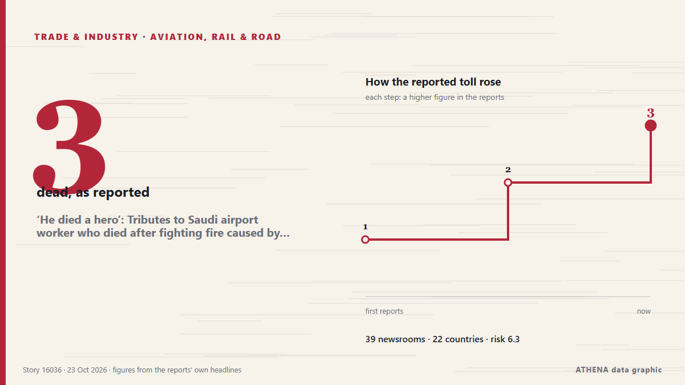

‘He died a hero’: Tributes to Saudi airport worker who died after fighting fire caused by Houthi attack

There were only a few flights by Saudi carriers from the Saudi capital's airport on Wednesday, even as Saudi authorities declared it's open for business. from The Independent
Reported independently by 39 outlets in 22 countries since 21 Oct, first by The Independent; coverage is quiet now. ATHENA rates the risk high (6.3/10), driven mainly by the severity of the harm described and its geographic and sector reach. Confidence is 87% (high), with 39 independent outlets corroborating it and an average source reliability of 75%. Newsrooms by country: Saudi Arabia (5), India (5), United Arab Emirates (4). Coverage: 21 Oct to 22 Oct, 23 hours.
Why it matters: Disruption to trade, industry or infrastructure travels along supply chains, changing costs and delivery times far away.
What changed: 9 new reports from 8 newsrooms in the 24 hours to 23 Oct.
At a glance
Selected, scored and written by ATHENA's published methodology. No editor intervenes in individual events. How this is produced ›
| 21 Oct 12:22 UTC | 1 |
|---|---|
| 21 Oct 14:22 UTC | 0 |
| 21 Oct 16:22 UTC | 0 |
| 21 Oct 18:22 UTC | 0 |
| 21 Oct 20:22 UTC | 0 |
| 21 Oct 22:22 UTC | 4 |
| 22 Oct 00:22 UTC | 3 |
| 22 Oct 02:22 UTC | 5 |
| 22 Oct 04:22 UTC | 2 |
| 22 Oct 06:22 UTC | 14 |
| 22 Oct 08:22 UTC | 8 |
| 22 Oct 10:22 UTC | 6 |
| 22 Oct 12:22 UTC | 0 |
| 22 Oct 14:22 UTC | 0 |
| 22 Oct 16:22 UTC | 0 |
| 22 Oct 18:22 UTC | 2 |
| 22 Oct 20:22 UTC | 2 |
| 22 Oct 22:22 UTC | 0 |
| 23 Oct 00:22 UTC | 1 |
| 23 Oct 02:22 UTC | 0 |
| 23 Oct 04:22 UTC | 0 |
| 23 Oct 06:22 UTC | 1 |
| 23 Oct 08:22 UTC | 0 |
| 23 Oct 10:22 UTC | 0 |
| 23 Oct 12:22 UTC | 1 |
| 23 Oct 14:22 UTC | 2 |
| 22 Oct 07:04 UTC | 5.6 |
|---|---|
| 22 Oct 07:19 UTC | 6.7 |
| 22 Oct 19:57 UTC | 6.6 |
| 23 Oct 15:15 UTC | 6.9 |
| 26 Oct 12:06 UTC | 6.3 |
| 26 Oct 12:06 UTC | 6.3 |
Why these numbers
Importance
Risk
Confidence
The reporting — who reported it, and when
headline as published · opens the original- The Independent · United KingdomSaudi capital's airport opens to limited traffic, and other Mideast news
- Middle East Eye · INTOne killed, eight injured in Saudi Arabia’s King Fahd airport attack
- Anadolu Agency (English) · TurkeyAttack on Saudi Arabia’s Dammam airport kills 1, injures 8: Aviation authority
- RTÉ News · IrelandTwo dead, eight injured in Saudi airport attack
- The Hill · United States1 killed, 8 wounded in Saudi Arabia airport attack
- Al Jazeera English · QatarOne killed, eight injured in attack on Saudi Arabia’s King Fahd airport
- Express Tribune · PakistanSaudi-led coalition intercepts, destroys drone in Riyadh region
- Oman Observer · OmanThree killed in Saudi Arabia as Ansar Allah target oil field, airport
- Saudi Gazette · Saudi ArabiaOne killed, eight injured in attack on Dammam airport
- Asharq Al-Awsat (English) · Saudi Arabia2 Killed, 8 Injured in Dammam Airport Attack
- The National · United Arab EmiratesUS pulls diplomats from Saudi Arabia but denies wider Gulf withdrawal
- Arab Times · KuwaitDammam Airport Attack Leaves One Dead, Eight Injured in Saudi Arabia
- The National · United Arab EmiratesMiddle East latest: UAE condemns Houthi attack on Saudi Arabia’s Dammam airport
- Khaama Press · AfghanistanOne Killed, Eight Injured in Attack on Saudi Arabia’s King Fahd Airport
- Kurdistan24 (English) · IraqSaudi Aviation Body Reports Two Killed in Dammam Airport Attack
- Oman Observer · OmanTwo dead in eastern Saudi airport attack: aviation authority
- The Korea Times · South Korea1 person killed in attack on eastern Saudi airport, authorities say
- Türkiye Today · TurkeyHouthi strike kills 1, injures 8 at Saudi King Fahd International Airport
- The Daily Star — page reader · BangladeshOne killed, 8 injured in Dammam airport attack: Saudi aviation authority
- The Straits Times · Singapore3 killed, 8 injured in attacks on Aramco oil field, Saudi airport
- Gulf News · United Arab EmiratesSaudi Arabia's Dammam airport resumes operations after attack kills two, injures eight
- Arab News · Saudi ArabiaDammam’s King Fahd airport resumes normal operations
- Business Recorder · PakistanTwo killed, 8 injured in attack on airport in Saudi oil city Dammam
- Indian Express · IndiaIndian killed, three others injured in Houthi attacks on Saudi Arabia
- Arab Times · KuwaitIndian Expat, Saudi National Among Two Killed in Iran-Backed Houthi Attack on Dammam Airport; Eight Injured
- NDTV · IndiaIndian Among 2 Killed In Attack On Saudi Airport, 2 Others Injured
- Times of India · IndiaIndian national among 2 killed in attack on Saudi Arabia's Dammam airport
- The New Arab · INTTwo dead in eastern Saudi airport attack: aviation authority
- Shafaq News (English) · IraqDammam airport attack death toll rises to two
- The Kathmandu Post · NepalA Nepali among eight injured in Dammam airport attack
- Daily Maverick · South AfricaTwo killed, 8 injured in attack on airport in Saudi oil city Dammam
- Xinhua (English) — page reader · ChinaDeaths from attack on Saudi airport rise to 2
- BBC News · United KingdomTwo killed in Houthi attack on airport in eastern Saudi Arabia, authorities say
- Scroll.in · IndiaSaudi Arabia: Indian killed in Dammam airport attack
- The Hindu · IndiaIndian killed as Houthis attack Saudi Arabia’s Dammam airport
- Gulf News · United Arab EmiratesKing Fahd airport attack: Indian national among two killed, embassy confirms
- Egypt Independent · EgyptTwo killed and eight injured in attack targeting King Fahd Airport in Saudi Arabia
- Egypt Independent · EgyptEgypt condemns attack on King Fahd Airport in Saudi Arabia
- Asharq Al-Awsat (English) · Saudi ArabiaJordan, Egypt Condemn Attack on King Fahd International Airport in Saudi Arabia
- Arab News · Saudi ArabiaIndia condemns deadly attacks on Saudi Arabia’s Eastern Province